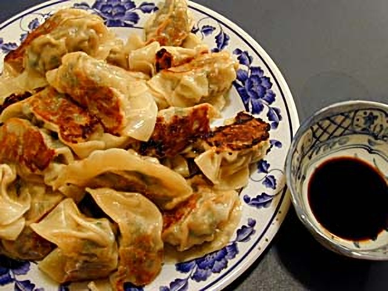

Daily Hand-Pleated Wrappers
We never use industrial pre-frozen commercial dumplings. Each wrapper is filled and pinched by hand each morning for tender skins that hold savory juices.
At Taipei Express, our dim sum appetizers are made with genuine artisan care. Every morning, our cooks hand-pleat hundreds of dumplings with freshly minced pork, scallions, and ginger. Pan-seared to achieve a crunchy golden lace bottom or steamed silky tender, they remain a beloved cornerstone of the Eastover dining routine.

Why scratch dumpling preparation matters.
We never use industrial pre-frozen commercial dumplings. Each wrapper is filled and pinched by hand each morning for tender skins that hold savory juices.
Potstickers are seared in oil, steamed under heavy domed lids to cook the filling through, and uncovered to brown their undersides into a delicate crunchy crust.
Accompanied by our house dipping sauce infused with slivered fresh ginger, aged Chinese black vinegar, dark soy, and chili oil for the ideal savory-acid balance.

Our General Tso’s chicken has satisfied cravings across Eastover and Myers Park for years. Bite-sized chicken thighs are crisped to an airy crunch, then quickly coated in our tangy chili-garlic glaze over high heat so the batter stays crunchy. Served with steamed broccoli and fluffy jasmine rice.
Order General Tso →